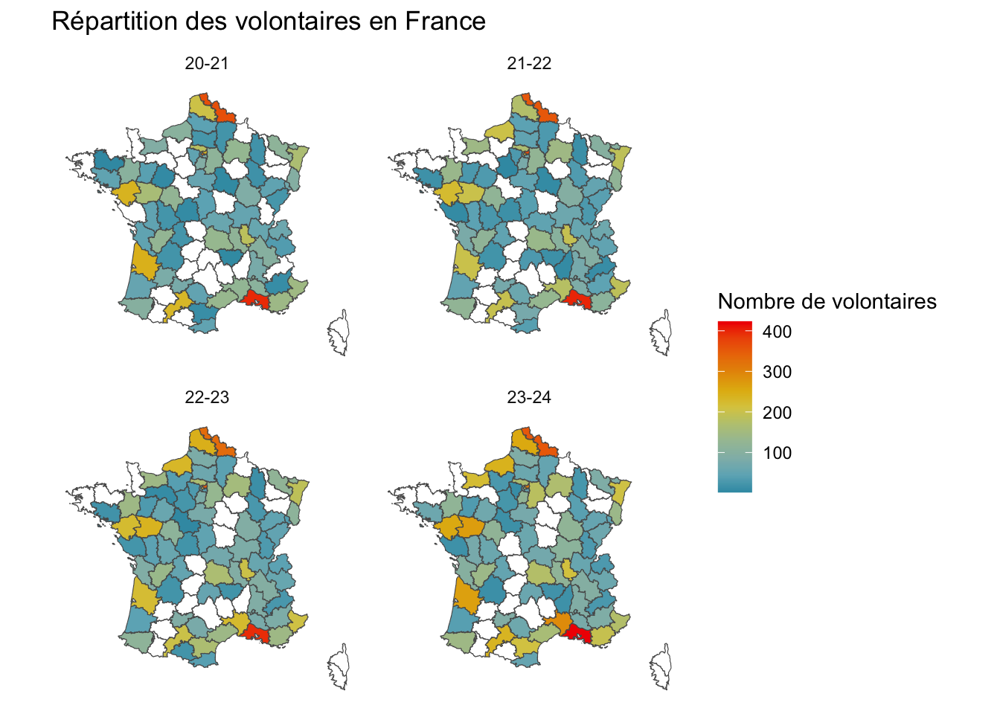
Rapport de bénévolat Cité-Unis
Abstract
This report analyzes survey data for four different cohorts of Cité-Unis volunteers who did their service civique (2020-2024).
Introduction
Ce rapport analyse les données d’enquête de quatre cohortes différentes de volontaires de Cité Unis qui ont effectué leur service civique en France entre 2020 et 2024.
Section 2 fournit des analyses permettant de savoir qui sont les volontaires. Dans Section 3, nous examinons comment le service civique a changé les attitudes et les points de vue des volontaires ? Nous examinons ensuite en détail plusieurs résultats intéressants, à savoir si les volontaires mettent fin à leur contrat de manière anticipée (Section 4), s’ils sont satisfaits (Section 5) et s’ils ont confiance en leur avenir ? (Section 6.2). Pour ces résultats, nous analysons s’il existe des tendances entre les différentes cohortes et quelles variables démographiques les prédisent. Dans ?@sec-programmes, nous étudions les différences entre les différents programmes offerts par Cité Unis. Le rapport se termine par une brève conclusion sur les notes méthodologiques pour les futurs questionnaires.
Pour ces analyses, nous nous appuyons sur les questionnaires collectés par Cité Unis pour quatre cohortes différentes de volontaires qui ont effectué leur service civique pendant un an (2020-2021 ; 2021-2022 ; 2022-2023 ; 2023-2024). Ces questionnaires sont très complets. Pour les présentes analyses, nous avons sélectionné un sous-ensemble de questions clés (la liste complète se trouve dans le… codebook )^ [Note que, lors de la rédaction de ce rapport, cette sélection de variables s’est basée uniquement sur le questionnaire de la première cohorte (2020/21). Par conséquent, les variables potentiellement intéressantes qui n’apparaissent que dans les questionnaires ultérieurs ne figureront pas ici.] .
Avant de plonger dans les résultats, il convient de faire preuve de prudence dans l’interprétation des résultats présentés dans ce rapport : Chaque fois que nous parlons de “prédictions”, il s’agit simplement d’associations statistiques - c’est-à-dire d’observations de différences entre les groupes. Ce rapport ne pas ne fournit pas de preuves qui justifieraient des conclusions causales - des réponses à des questions sur la santé et la sécurité. pourquoi nous observons ces différences.
Étant donné que les données qui sous-tendent ce rapport sont des données d’observation et - pour la plupart - ne permettent pas de suivre les changements d’opinion (parce que la plupart des questions n’ont été posées qu’une seule fois par cohorte), l’objectif principal de ce rapport n’est pas de fournir des réponses spécifiques et définitives. Il s’agit plutôt de permettre à Cité Unis d’identifier des questions intéressantes. Les résultats numériques présentés ici peuvent servir de pointeurs, mais ne constituent pas des diagnostics de problèmes. Ils doivent toujours être accompagnés d’évaluations qualitatives des éléments suivants pourquoi nous observons certaines différences, et ce qui pourrait ou ne pourrait pas être fait pour y remédier.
Ce rapport a pour but d’informer à l’aide de figures : les passages du texte ne discutent pas de tous les résultats des figures. Le texte a surtout pour but de donner des indications, d’illustrer la façon d’interpréter les figures. Les exemples de ces illustrations sont pour la plupart choisis au hasard.
Qui sont les bénévoles ?
Dans cette section, nous examinons en détail certaines variables démographiques. Un tableau récapitulatif détaillé des données démographiques de l’échantillon pour les différentes cohortes se trouve à l’adresse suivante Tableaux.
Situation géographique
Les bénévoles viennent de 80 différents départements (voir Figure 1). En moyenne, dans les différentes cohortes, la plupart des bénévoles venaient de Bouches-du-Rhône (n = 404), suivis par Nord (n = 350) et Seine-Saint-Denis (n = 316).
Dans l’ensemble, on constate une augmentation constante du nombre de bénévoles, de 6386 en 20-21 à 7848 en 23-24 et une augmentation moyenne de 490.4 par an. Depuis le 20-21 cohorte, chaque département a augmenté en moyenne de 26.7. Il y avait 51 départements qui ont connu une augmentation, et 14 qui ont connu une diminution (voir Figure 2). Pour plus de détails sur la tendance de chaque département, voir Tableaux.

Âge
Comme le montre Figure 3, sur l’ensemble des promos, la majorité des bénévoles a entre 18 et 20 ans. La part de la tranche d’âge des 16-17 ans augmente rapidement, doublant les points de pourcentage pour passer de 13 % en 2020 à 24 % en 2024.
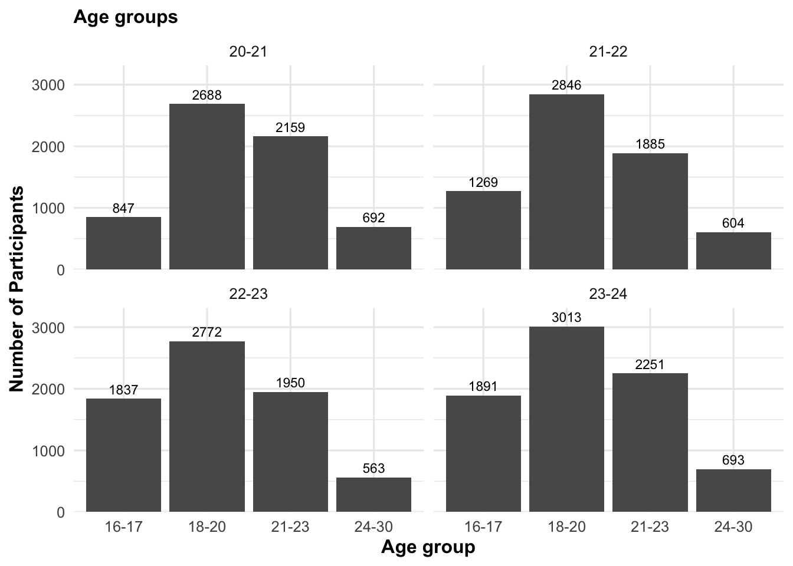

L’éducation
Figure 4 montre que les volontaires ayant un “Bac + 3 et plus” sont relativement rares. La part des bénévoles ayant un “Bac à Bac + 2” est en constante diminution, passant de 48% en 2020-21 à 40% en 2023-24. En revanche, les bénévoles “Infra-bac”, sont en augmentation, passant de 32% en 2020-21 à 43% en 2023-24.


Sexe
Il y a une différence stable concernant le sexe, avec plus de femmes (~60%) volontaires que d’hommes (Figure 5).


Comment les bénévoles ont-ils changé d’attitude ?
Dans la sélection des variables faite pour ce rapport, il n’y a que deux questions que l’on a posées aux bénévoles de la même promo à des moments différents :
“Avez-vous voté lors des dernières élections (locales ou nationales) ?” (Section 3.2).
“En général, pensez-vous que votre action individuelle peut contribuer à changer la société ?” (Section 3.3).
Avant de nous pencher sur ces deux questions, nous allons nous intéresser à l’attrition.
L’attrition
Le terme attrition fait référence aux bénévoles qui abandonnent les enquêtes au fil du temps. L’attrition peut avoir de nombreuses causes. Nous distinguons ici deux explications : les ruptures, c’est-à-dire les volontaires qui mettent fin prématurément à leur service civique (Section 4) et la lassitude face à l’enquête, c’est-à-dire les volontaires qui poursuivent leur service civique mais ne remplissent pas les questionnaires (Figure 7).
Figure 6 montre l’attrition en général, tandis que Figure 7 exclut les ruptures, donnant ainsi une estimation de la fatigue de l’enquête. Ce dernier chiffre montre que la fatigue de l’enquête est un problème, mais suggère également qu’il existe une tendance légèrement positive vers une réduction de la fatigue de l’enquête : de plus en plus de volontaires semblent répondre aux questionnaires au moins pour les deux premiers questionnaires (q1 et q2), mais moins pour le troisième questionnaire (q3).
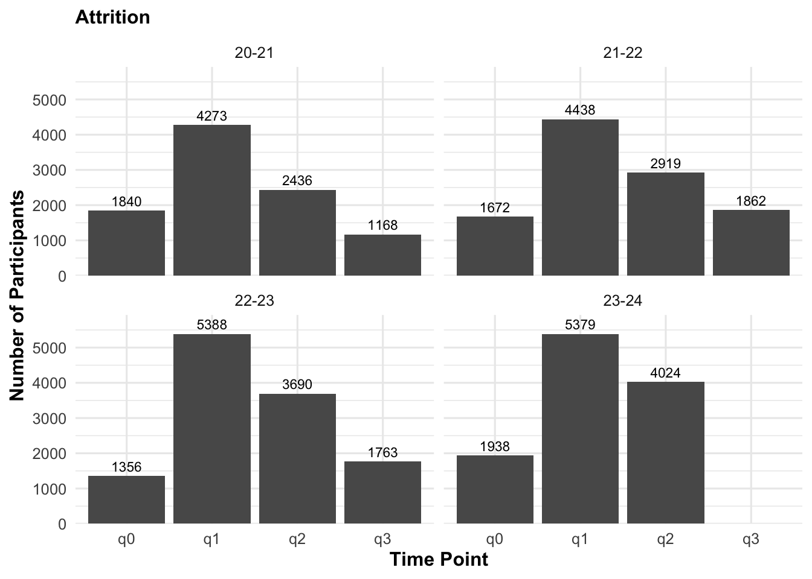


Le vote
Dans cette section, nous examinons comment les bénévoles ont changé en ce qui concerne leur comportement de vote. Le comportement électoral a été mesuré à l’aide de la question : “Avez-vous voté lors des dernières élections (locales ou nationales) ?”, qui a été posée aux points temporels q1 et q2. Figure 8 montre que, si l’on fait la moyenne de toutes les cohortes et de tous les points dans le temps, la majorité des volontaires déclare avoir voté.
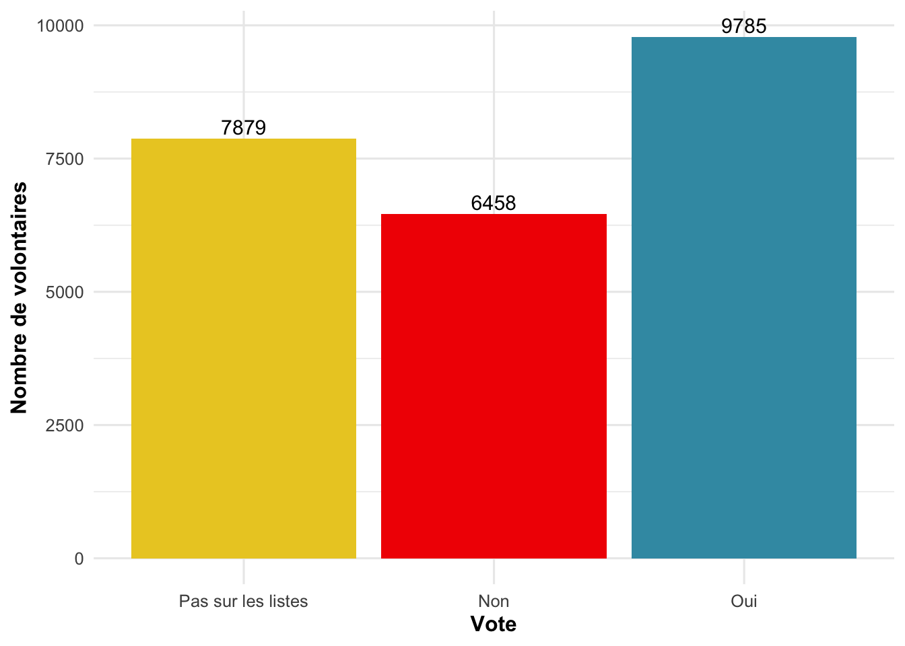

Dans les sections suivantes, nous étudions comment les volontaires ont changé en répondant à cette question, tout au long de leur service civique. Pour ces analyses, nous ne prenons en compte que les volontaires qui ont répondu à la question aux deux moments, q1 et q2. Les changements vers “Oui” ou “Non” peuvent s’être produits soit à partir de l’autre option respective, soit à partir de la troisième option de réponse : “Vous n’aviez pas l’âge de voter ou vous n’étiez pas inscrit.e sur les listes électorales”, qui est abrégé dans les graphiques ci-dessous par “Pas sur les listes”. Nous examinons les différentes cohortes séparément (promo 2020-21, Figure 9 ; promo 2021-22, Figure 10 ; 2022-23, Figure 11 ; 2023-24, Figure 12).
Les sections suivantes révèlent des différences considérables entre les cohortes. Par exemple, en 2020-21 et 2021-22, de nombreux bénévoles ont signalé des changements dans leur comportement de vote, mais dans des directions opposées : En 2020-21, 24 % des bénévoles ont changé vers le “Non”, dépassant de loin ceux qui ont changé vers le “Oui” (6 %). Inversement, en 2021-22, 35 % des bénévoles ont changé vers le “Oui”, tandis que seulement 8 % ont changé vers le “Non”.
On ne sait pas exactement pourquoi on observe ces différences. Une explication pourrait être que les bénévoles se soucient davantage des élections nationales que des élections locales (ou vice versa). Si c’est le cas, on pourrait s’attendre à ce que les changements dans le comportement électoral dépendent du fait que des élections nationales ou locales ont eu lieu pendant l’année du service civique d’une cohorte.
Promo 2020-21


Promo 2021-22


Promo 2022-23


Promo 2023-24
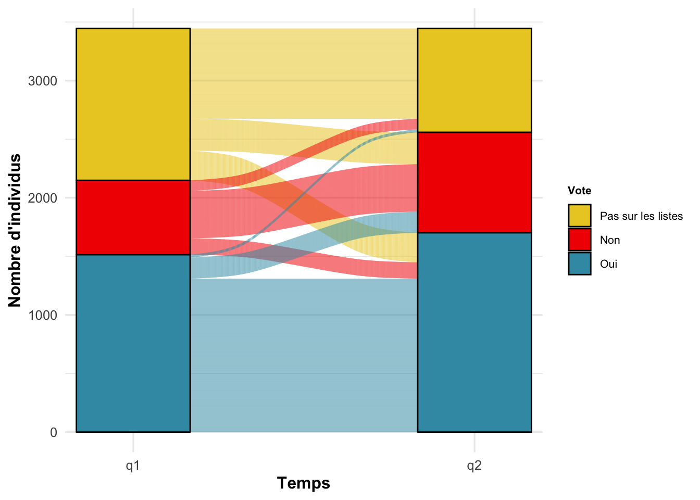

Quels sont les facteurs démographiques associés au changement des intentions de vote ?
Figure 13 montre comment différentes variables démographiques prédisent les changements dans le comportement électoral. Pour cette analyse, nous considérons toutes les cohortes ensemble. Le résultat, les changements dans le comportement de vote, est binaire (changé pour non vs changé pour oui)1.
Sur l’axe des ordonnées figurent les variables démographiques, considérées comme prédictives d’un changement de comportement électoral. Pour chaque variable démographique catégorielle, différents niveaux sont indiqués. Par exemple, pour la variable age_category le graphique montre trois niveaux : age_categorie18-20, age_categorie21-23, age_categorie24-30 . Chacune de ces catégories a une estimation (axe des x). Ces estimations sont les résultats de régressions logistiques^ [Pour chaque variable, une régression logistique distincte a été effectuée. Les estimations de la régression logistique sont exponentielles, de sorte que les estimations rapportées peuvent être interprétées comme des rapports de cotes (RC).] . Ils indiquent comment le fait d’appartenir à une certaine catégorie (par exemple, avoir entre 18 et 20 ans) prédit les chances de changer son comportement électoral. Les estimations sont des “rapports de cotes”, qui peuvent être considérés comme des probabilités : Un rapport de cotes de 1 signifie que ce groupe a les mêmes chances de changer pour le “non” que pour le “oui”. Plus de 1 signifie que ce groupe a plus de chances de passer au “oui”. Par exemple, un rapport de cotes de 2,0 signifie qu’il y a deux fois plus de chances. Un rapport de cotes inférieur à 1 signifie que ce groupe a plus de chances de passer au “non”. Un rapport de cotes de 0,5 signifie qu’il est deux fois moins probable.
Pour chaque variable catégorielle, une catégorie est choisie comme catégorie de base (ou de référence). Les rapports de cotes de toutes les autres catégories sont relatifs à cette référence. Par exemple, pour la variable age_category la catégorie “16-17” n’apparaît pas dans le graphique, car il s’agit de la catégorie de base (invisible). Si le rapport de cotes pour age_category18–20 est de 1,43, cela signifie que les jeunes de 18 à 20 ans sont plus susceptibles de changer leur vote en faveur du “Oui” que les jeunes de 16 à 17 ans. Plus précisément, les chances de changer en faveur du “Oui” chez les 18-20 ans sont environ 43 % plus élevées que chez les 16-17 ans.

Pour comprendre ce rapport de chances, prends ?@fig-vote_derniers_elections-age-absolu : il montre que parmi les 16 à 17 ans, 285 ont changé vers le “Non”, alors que seulement 238 ont changé vers le “Oui”. Cela fait donc des chances de changer vers le oui pour la tranche d’âge la plus jeune, choisie comme catégorie de référence dans le modèle, 238:285 = ~0.84. En revanche, chez les 18 à 20 ans, les chances sont de . 784:658 = ~1.19. Le rapport de cotes pour les 18 à 20 ans compare leurs cotes à celles des 16 à 17 ans. odds ratio = 1.19:0.84 = 1.4.
?@fig-vote_derniers_elections-age-pourcentages permet de comparer les odds ratios aux pourcentages pour les différentes tranches d’âge. Tout comme pour les nombres absolus, les odds ratios peuvent être calculés à partir des pourcentages. Par exemple, parmi les jeunes de 16 à 17 ans, 13,8 % ont changé vers le “Non”, tandis que 11,5 % ont changé vers le “Oui”, ce qui fait que les chances de changer vers le “Oui”, comme ci-dessus, 0.115:0.138 = ~0.83 ^ [Note que dans cette illustration, nous obtenons une valeur légèrement différente par rapport à 0,84 ci-dessus en raison de l’imprécision des arrondis.] . Chez les jeunes de 18 à 20 ans, en conséquence, les probabilités étaient, comme ci-dessus,0.174:0.146 = ~1.19 ce qui donne le même rapport de cotes de ~1,4.


Accessoirement, en regardant les tranches d’âge de 16 à 17 ans, on s’aperçoit que certaines réponses étaient erronées. En France, l’âge légal pour voter est de 18 ans. Par conséquent, les jeunes de 16 à 17 ans, du moins au début de leur service civique (q0/q1), n’ont jamais été inscrits sur une liste électorale auparavant. Cependant, comme le montre ?@fig-vote_derniers_elections-jeunes, il y a 443 volontaires qui ont répondu “Non” à q0/q1 (ce qui est techniquement vrai, mais n’est pas l’option de réponse la plus spécifique), et 20 qui ont répondu “Oui” (probablement en ne lisant pas la question attentivement ou en cliquant accidentellement sur la mauvaise réponse). Nous ne savons pas si ou comment cela aurait pu affecter nos résultats sur les changements dans le comportement de vote.

Action individuelle pour la société
Dans cette section, nous examinons comment les bénévoles ont changé en ce qui concerne leur perception sur le fait que leur action individuelle peut contribuer à changer la société. Ceci a été mesuré à l’aide de la question suivante : ” En général, pensez-vous que votre action individuelle peut contribuer à changer la société ?“, qui a été posée aux points temporels q1 et q3. Nous examinons les différentes cohortes séparément (promo 2020-21, Figure 17 ; promo 2021-22, Figure 10 ; 2022-23, Figure 11 ; 2023-24, Figure 12).^ [Note que pour la promo 2023-24, le q3 n’est pas encore disponible, et la promo ne peut donc pas être incluse ici] .
D’un point de vue descriptif, il n’y a pas non plus de tendance positive ou négative claire. En moyenne, toutes cohortes confondues, un peu plus de personnes évoluent vers “Non” ou “Pas vraiment”, par rapport à “Oui”.
Promo 2020-21

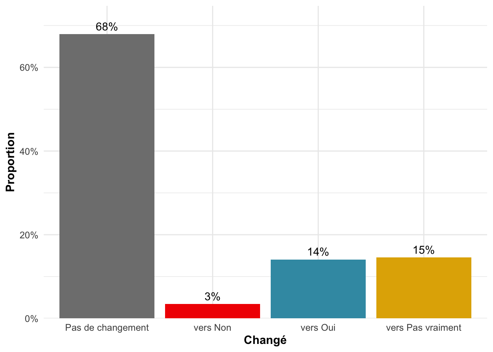
Promo 2021-22


Promo 2022-23


Quels facteurs démographiques sont associés à un changement dans la perception de la contribution individuelle à la société ?
Figure 20 montre comment différentes variables démographiques prédisent l’évolution de la perception de la contribution individuelle à la société. Pour cette analyse, nous considérons toutes les cohortes ensemble. Le résultat, les changements dans la perception de la contribution individuelle à la société, a été regroupé en une mesure binaire (“vers Non/Pas vraiment” vs. “vers Oui”). Les graphiques peuvent être interprétés comme décrit ci-dessus dans la section sur le comportement de vote (Section 3.2). Un rapport de cotes de 1 signifie qu’un certain groupe a les mêmes chances de passer à “Non/Pas vraiment” que de passer à “Oui”, par rapport au groupe de référence. Plus de 1 signifie que ce groupe a plus de chances de passer à “Oui”. Moins de 1 signifie que ce groupe a plus de chances de passer à “Non/Pas vraiment”.
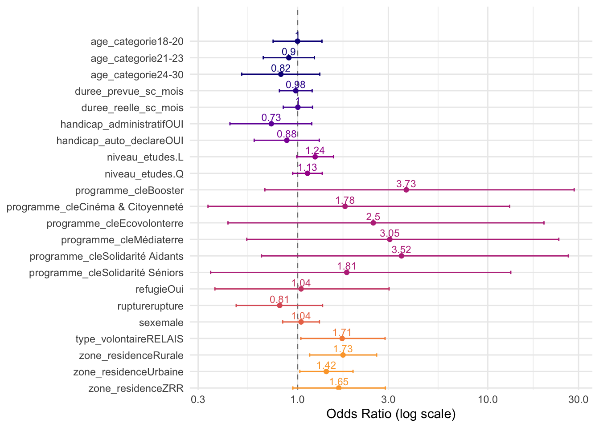
Les résultats suggèrent que les bénévoles du programme “Relais” sont plus susceptibles de changer vers “Oui”, que les bénévoles du programme “CŒUR”. Figure 21 fait un zoom sur ces résultats.

Rupture
Tous les bénévoles ne travaillent pas jusqu’à la fin de leur contrat. En effet , 22.9% des bénévoles ont une “rupture”, c’est-à-dire qu’ils mettent fin au contrat de manière anticipée (Figure 22). Il existe différents motifs pour mettre fin à son contrat de manière anticipée (Figure 23). Tous ne sont pas forcément mauvais, par exemple “Embauche en CDD d’au moins 6 mois ou CDI”, et certains sont hors de l’influence des volontaires, par exemple “Fin de validité du Titre de Séjour”.
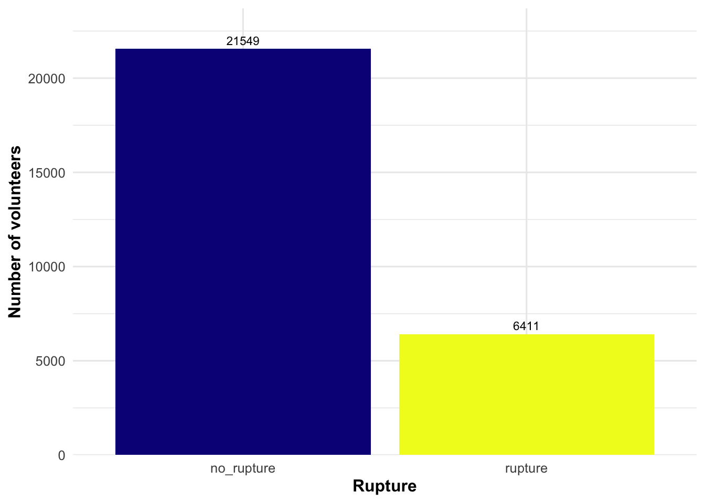

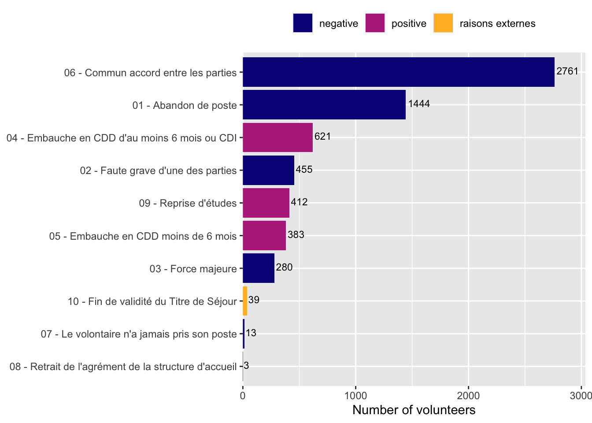
Changement de rupture
Figure 24 illustre le changement concernant le nombre de bénévoles ayant mis fin à leur contrat de manière anticipée (rupture) en comparant les différentes promos. Il n’y a pas de tendance claire avec un peu plus de 20 % des volontaires ayant connu une rupture.


Qu’est-ce qui permet de prédire si les volontaires mettent fin à leur contrat de manière anticipée (rupture) ?
Pour les analyses sur ce qui prédit les ruptures, nous nous concentrons uniquement sur les volontaires qui ont mis fin à leur contrat de manière anticipée pour des raisons apparentes. négatifs pour des raisons apparemment négatives. Nous avons utilisé une mesure de résultat binaire (pas de rupture négative vs. rupture négative) et effectué des régressions logistiques séparées avec des variables démographiques (Figure 25) et une sélection d’autres variables (Figure 27).
Un rapport de cotes de 1 signifie qu’un certain groupe a les mêmes chances d’avoir une rupture, par rapport au groupe de référence. Plus de 1 signifie que ce groupe a plus de chances d’avoir une rupture. Moins de 1 signifie que ce groupe a moins de chances d’avoir une rupture.
Facteurs démographiques
Figure 25 révèle, par exemple, que les groupes d’âge plus élevés ou les réfugiés sont moins susceptibles d’avoir une rupture, que les bénévoles de sexe masculin et les bénévoles souffrant d’un handicap sont plus susceptibles d’en avoir une. Les rapports de cotes peuvent être interprétés comme dans les sections précédentes. Pour donner un autre exemple, prenons la variable selon laquelle les bénévoles faisaient partie du programme “CŒUR” ou du programme “RELAIS” (type_volontaire). L’odds ratio est de 0,9, ce qui signifie que les volontaires du programme “RELAIS” avaient moins de risques d’avoir une rupture. Plus précisément, ils n’avaient que 90 % des chances de rompre leur contrat, par rapport aux volontaires du “CŒUR”.
Pour mieux comprendre, Figure 26 montre les différences descriptives (en pourcentages) concernant la rupture pour certaines variables démographiques, notamment type_volontaire . Le rapport de cotes peut être obtenu en divisant les cotes du programme “RELAIS” (0,161:0,834 = 0,193) par les cotes du programme “CŒUR” (0,181:0,819 = 0,221) (0,193:0,221 = ~0,9).^ [Note qu’il y a de légères différences avec le rapport de cotes indiqué en raison d’erreurs d’arrondi.] .
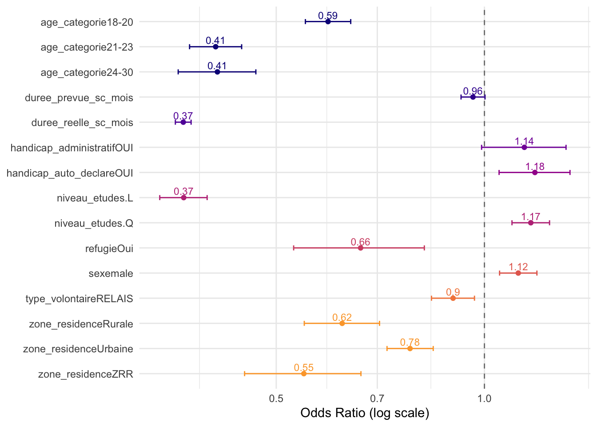

Autres facteurs
Pour les variables non démographiques, l’étude de leur relation avec la rupture n’est pas possible - simplement parce que, par définition, pour les questions qui ont été posées uniquement à “q2” et “q3”, les volontaires qui avaient mis fin à leur contrat de manière anticipée n’étaient plus disponibles (voir Table 1). Uniquement pour les deux variables qui ont été posées à “q1” :
perception_avenir_num(Concernant votre avenir, êtes-vous… ? Très confiant(e) ; Assez confiant(e) ; Peu confiant(e) ; Pas du tout confiant(e))^[Note_numdans le nom de la variable signifie ” numérique ” : nous utilisons une version numérique, de ” Pas du tout confiant(e) ” = 1, à ” Très confiant(e) ” = 4].action_individuelle_societe(En général, pensez-vous que votre action individuelle peut contribuer à changer la société ? Oui ; Pas vraiment ; Non)
Figure 27 montre comment ces variables prédisent la rupture. La variable action_individuelle_societe est catégorique et peut être interprétée comme les variables démographiques des résultats précédents : une catégorie sert de référence (omise) et les rapports de cotes rapportés représentent la façon dont les cotes de rupture diffèrent par rapport à cette référence. La variable perception_avenir_num est numérique (sur une échelle de 1 à 4). Pour les prédicteurs numériques, le rapport de cotes estimé indique de combien les chances de rupture changent, en moyenne, pour chaque augmentation d’une unité sur l’échelle. Par exemple, l’estimation résultante de 1,14 dans Figure 27 for perception_avenir_num signifie qu’en moyenne, une augmentation d’un point de la confiance en l’avenir correspond à une augmentation de 14 % des chances de rupture. En d’autres termes, les résultats suggèrent que plus les volontaires sont confiants dans leur avenir, plus ils ont de chances d’avoir une rupture, en moyenne. Cependant, Figure 28 zoome sur ce constat et suggère que cet effet moyen est surtout le fait des bénévoles qui sont “très confiants”.
| variable | source |
|---|---|
| perception_avenir | q1 |
| action_individuelle_societe | q1 |
| projet_avenir_concret | q2 |
| comparaison_utilite_autres | q2 |
| fierte | q2 |
| confiance_en_soi | q2 |
| confiance_avenir_personnel | q2 |
| action_individuelle_societe | q3 |
| impact_situation_actuelle | q3 |
| integration | q2 |


Satisfaction
Dans cette section, nous examinons la satisfaction (“D’une manière générale, diriez-vous que votre Service Civique s’est déroulé de façon…” avec les niveaux 1, “pas du tout satisfaisante”, à 4, “très satisfaisante”).^ [Dans toutes les analyses, nous traitons cette variable comme une variable continue] . Comme le montre Figure 29, toutes cohortes confondues, la majorité des volontaires pense que leur expérience est “très satisfaisante”.

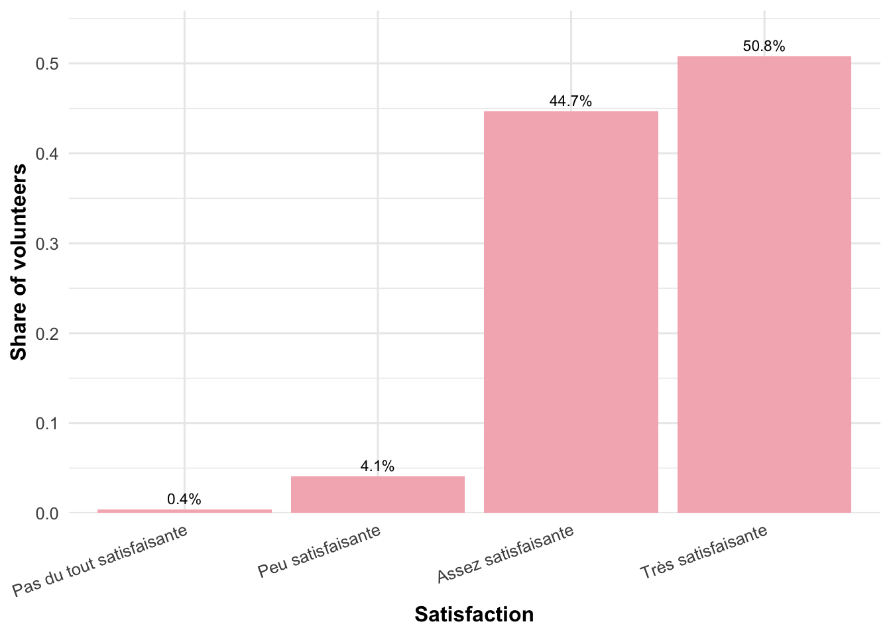
Évolution de la satisfaction
Figure 30 montre comment la satisfaction à l’égard du service civique a évolué dans le temps, entre les différentes cohortes. La part des bénévoles “très satisfaits” a diminué au fil du temps, mais les parts de ceux qui ne sont pas ou peu satisfaits sont restées globalement stables.

Qu’est-ce qui permet de prédire si les bénévoles sont plus satisfaits ?
Pour les analyses sur ce qui prédit la satisfaction, nous traitons la satisfaction comme une variable continue (de 1, “Pas du tout satisfaisante”, à 4, “Très satisfaisante”). Comme ce résultat est continu, nous effectuons des régressions linéaires (et non des régressions logistiques, comme précédemment). Les résultats pour les variables démographiques sont affichés dans Figure 25, pour les autres variables dans Figure 27.
Facteurs démographiques
Les résultats des régressions linéaires sont plus simples à interpréter. Pour les prédicteurs catégoriels (c’est-à-dire toutes les variables démographiques), l’estimation est simplement la différence moyenne entre la catégorie montrée et la catégorie de base (encore une fois, omise). Par exemple, comme le montre la variable refugie les réfugiés ont tendance à être, en moyenne, plus satisfaits de 0,2 point (sur l’échelle de satisfaction à 4 points) que les non-réfugiés.

Autres facteurs
Certaines des variables non démographiques sont numériques^[Tous les noms de variables qui se terminent par _num ont été traités comme des variables numériques pour les présentes analyses], par exemple, confiance_en_soi_num (Pensez-vous avoir gagné en confiance en vous durant votre Service Civique ? 1 - Non, pas du tout ; 2 - Non, pas vraiment ; 3 - Oui, assez ; 4 - Oui, beaucoup).
Pour les variables numériques, les estimations représentent l’augmentation ou la diminution de la satisfaction avec une augmentation d’une unité de la variable prédictive. Par exemple, pour confiance_en_soi_num l’estimation est de 0,33. confiance_en_soi_num prend des valeurs sur une échelle de 4 points (de 1, “Non, pas du tout”, à 4, “Oui, beaucoup”). Cela signifie qu’en moyenne, une augmentation d’une unité de confiance_en_soi_num est associée à une augmentation de 0,33 point de la satisfaction (échelle de 4 points).
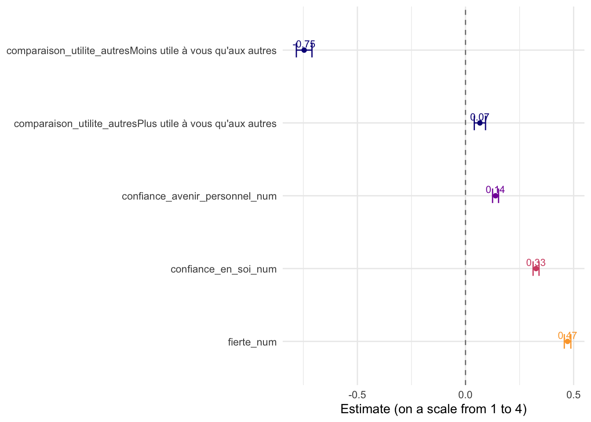
Confiance en l’avenir
Dans cette section, nous nous intéressons à la confiance en l’avenir (perception_avenir : “Concernant votre avenir, êtes-vous… ?” avec les niveaux 1, “Pas du tout confiant.e”, à 4, “Très confiant.e”).^ [Dans toutes les analyses, nous traitons cette variable comme une variable continue] . Comme le montre Figure 33, toutes cohortes confondues, la majorité des volontaires sont “assez confiant.e”.


Évolution de la confiance en son avenir
Figure 34 montre comment la confiance en son avenir a évolué dans le temps, entre les différentes cohortes. Les résultats sont très stables, avec une majorité de volontaires “assez confiant.e” dans toutes les cohortes.

Qu’est-ce qui prédit que les bénévoles sont plus confiants dans leur avenir ?
Comme pour la satisfaction ci-dessus, pour les analyses sur ce qui prédit la confiance dans leur avenir, nous la traitons comme une variable continue (1, “Pas du tout confiant.e”, à 4, “Très confiant.e”). En ce qui concerne la satisfaction, comme ce résultat est continu, nous effectuons des régressions linéaires. Les résultats pour les variables démographiques sont affichés dans Figure 35, pour les autres variables dans ?@fig-perception-avenir-autres-variables.
Facteurs démographiques
Les résultats suggèrent que, par rapport à (la catégorie omise des 16 à 17 ans), les 18 à 20 ans ainsi que les 21 à 23 ans sont légèrement moins confiants, tandis que les 24 à 30 ans sont légèrement plus confiants. Les réfugiés sont nettement plus compétents (0,45, sur l’échelle de 4 points) que les non-réfugiés. Les hommes bénévoles sont également plus nombreux à avoir confiance en leur avenir (0,21), tout comme les bénévoles du programme “Relais” (0,13, par rapport au programme “Cœur”).

Autres facteurs
La seule autre variable que nous prenons en compte ici est action_individuelle_societe (“En général, pensez-vous que votre action individuelle peut contribuer à changer la société ?” Oui ; Pas vraiment ; Non). ?@fig-perception-avenir-autres-variables montre que les bénévoles qui ne pensent pas qu’ils peuvent contribuer individuellement à changer la société (la catégorie de base omise) sont les moins confiants dans leur avenir : les bénévoles qui sont légèrement moins pessimistes (ayant répondu “Pas vraiment”) et les bénévoles qui pensent qu’ils peuvent contribuer (ayant répondu “Oui”) sont plus susceptibles d’être confiants, ceux qui ont répondu “Oui” étant les plus confiants.

Différences entre les programmes
Cette section examine les différences démographiques entre les programmes.
Il y a 14 différents programmes, que l’on peut classer en 6 différentes catégories (voir Tableaux). Ici, nous ne faisons la distinction qu’entre 7 catégories de programmes clés, à savoir : Solidarité Séniors; Médiaterre; Cinéma & Citoyenneté; Solidarité Aidants; Booster; Ecovolonterre; ASM.
Les sections suivantes montrent, pour chaque catégorie de programme clé, comment les bénévoles de ce programme diffèrent par rapport à toutes les autres catégories de programme clé combinées, en termes de variables démographiques. Les résultats sont exprimés sous forme de rapports de cotes, qui peuvent être interprétés comme ci-dessus : Si le rapport de cotes est supérieur à 1 alors un certain groupe est plus probable d’être représenté dans la catégorie du programme clé ciblé, par rapport à tous les autres programmes. Par exemple, dans Figure 37, il y a plus de jeunes de 18 à 20 ans (odds ratio = 1,18, par rapport à la base omise, les 16 à 17 ans) dans le programme “Solidarité Aidants”, que dans les autres programmes, en moyenne. Si l’odds ratio est inférieur à 1 cela signifie qu’un certain groupe est moins probable d’être représenté dans la catégorie de programme clé ciblée. Par exemple, les réfugiés sont considérablement moins susceptibles (rapport de cotes = 0,17, par rapport à la base omise, les non-réfugiés) d’être dans le programme “Solidarité Aidants”, par rapport à tous les autres programmes, en moyenne.
Solidarité Aidants

Cinéma & Citoyenneté
Les bénévoles qui travaillent dans des projets liés au cinéma ont tendance à être plus âgés et plus éduqués. Les réfugiés sont moins susceptibles d’être des ciné-bénévoles. S’il y a une fin préliminaire au contrat, les ciné-bénévoles sont plus susceptibles de le faire parce qu’on leur a proposé un CDD de moins de 6 mois. Les réfugiés sont moins susceptibles d’être des ciné-bénévoles, et les femmes, ainsi que les personnes originaires de zones urbaines sont plus susceptibles de l’être.
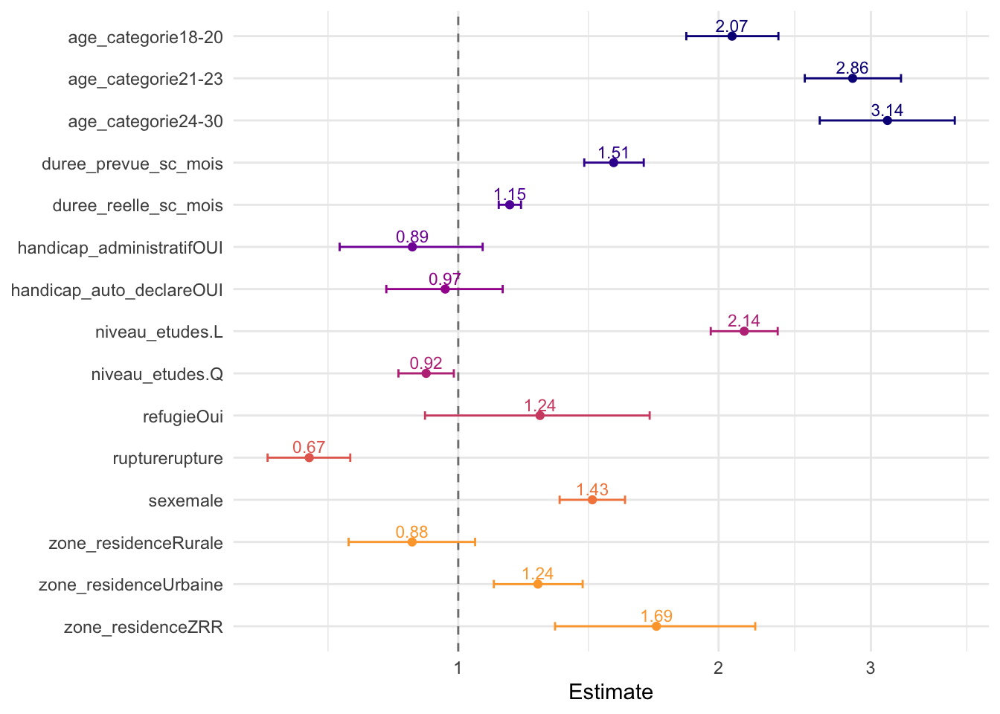
Booster
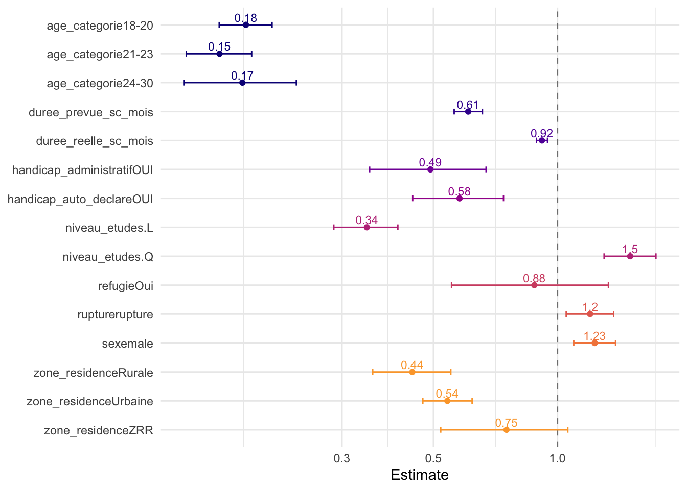
Ecovolonterre
Les écovolontaires ont tendance à être plus âgés (le plus souvent entre 21 et 23 ans) et plus éduqués que les autres bénévoles. Ils ont tendance à planifier des programmes de bénévolat plus longs. Les écovolontaires ont tendance à venir de régions plus rurales mais aussi plus urbaines (par rapport aux QVP).
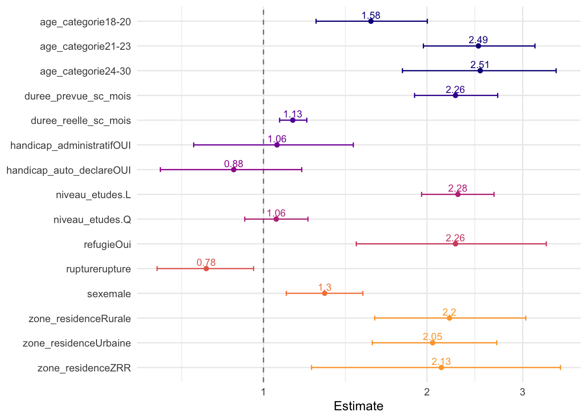
Médiaterre
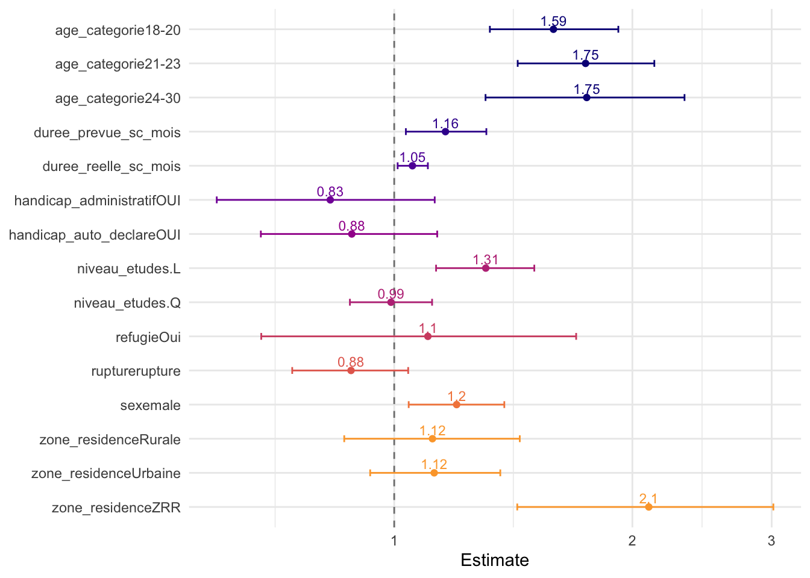
ASM

Solidarité Séniors

Conclusion : Quelques notes méthodologiques
Ce rapport ne peut que donner un aperçu des nombreuses données d’enquête qui ont été recueillies par Cité Unis. En général, les questionnaires pourraient probablement être plus courts. Moins de questions réduiraient probablement l’attrition - si les volontaires répondent à un questionnaire très long à q1, ils ne seront peut-être pas motivés pour remplir un autre questionnaire très long à q2, et encore moins à q3. Inclure moins de questions améliorerait probablement aussi la qualité des réponses, car les volontaires pourraient se lasser ou s’ennuyer avec de longs questionnaires, et donc cliquer très rapidement et sans réfléchir à un moment ou à un autre. Une autre option pour améliorer la qualité des réponses pourrait être d’ajouter des contrôles d’attention. Cependant, étant donné que les bénévoles ne sont pas forcés de répondre au sondage, nous pouvons probablement supposer que ceux qui y répondent sont motivés pour le remplir fidèlement.
Un autre levier d’amélioration consiste à rendre les questionnaires à différents moments plus similaires. Poser les mêmes questions à tous les différents moments permet de suivre l’évolution de chaque volontaire tout au long de son service civique (comme dans Section 3).
Sur une note mineure, il serait peut-être plus intéressant d’interroger les volontaires sur leurs intentions de vote, plutôt que sur leur comportement de vote passé. Il y a des raisons de penser que certains volontaires ne répondent pas à la question actuelle sur le comportement passé comme prévu (Figure 16). De plus, l’observation du changement concernant le comportement électoral passé dépend beaucoup du fait que les élections ont lieu pour une cohorte particulière pendant leur année de service civique.
Footnotes
C’est-à-dire en ignorant tous les volontaires qui n’ont pas changé.↩︎